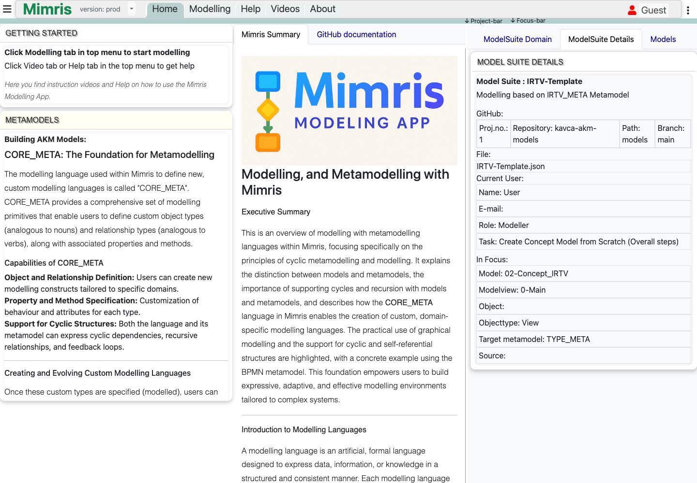
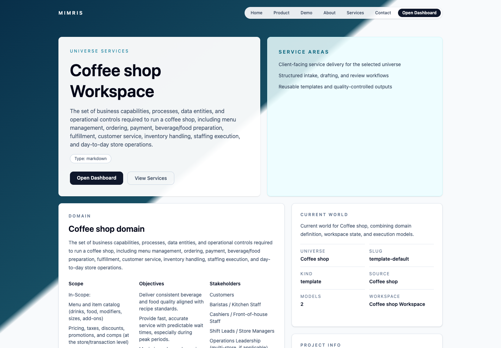

Coffee shop order flow
Linked to Order Entry, Payment Checkout, Production Routing, Inventory Ops, and Work Items.
Mimris AI Workspace
Keep AI-assisted project work connected to the domain model.
Link concepts, documents, decisions, work items, and implementation context so project context survives beyond individual chats and diagrams.
Linked to Order Entry, Payment Checkout, Production Routing, Inventory Ops, and Work Items.
The gap
Chats are useful for exploration, but serious project work needs continuity. Domain concepts drift, decisions get buried, documents separate from tasks, and implementation context has to be rebuilt again and again.
Keep the concepts behind the work visible and reusable across documents, tasks, and implementation.
Move from model-driven thinking into concrete outputs without losing traceability.
Give AI assistance a stable workspace around the project instead of relying on one-off prompts.
Use AI to accelerate the work while keeping the structure reviewable and editable.
Guided proof
Start with the coffee-shop demo, inspect the end-to-end store flow, then follow how model concepts stay connected to domain documents, operational views, and work items.
Use the AI Workspace demo as the first evaluation path.
Start from a concrete operating model instead of a blank diagram.
Check links across Order Entry, Payment Checkout, Production Routing, Inventory Ops, domain documents, and work items.
Evaluate what context remains attached when the coffee-shop model or generated draft changes.
Use cases
Links
Use the workspace demo first for the guided coffee-shop operations proof. Use the modelling app second if you want to inspect or build the underlying domain language.
Primary guided proof path for connected project execution.
Public demo Press kit Feedback via Mimris issueDeeper second step for understanding or building the underlying modelling language.
Public demo GitHub repository Feedback issueProduct views
Diagrams.net helps you draw a diagram. BPMN and UML help you express known modelling languages. Mimris lets you define the domain language and keep its concepts connected to ongoing project execution.


Questions
No. Those tools can be part of the workflow. Mimris is focused on preserving structured project context across models, documents, work items, and implementation.
The current public proof path is optimized around a coffee-shop operations demo. Legal, consulting, expert-review, software, and internal-tool teams are still relevant audiences where preserving context across discovery and implementation matters.
Diagrams.net helps you draw diagrams. BPMN and UML help you express known modelling languages. Mimris lets you define the domain language and keep its concepts connected to ongoing project execution.
Models make the important concepts explicit. When documents, tasks, and implementation can reference the same structure, AI-assisted work becomes easier to review and evolve.